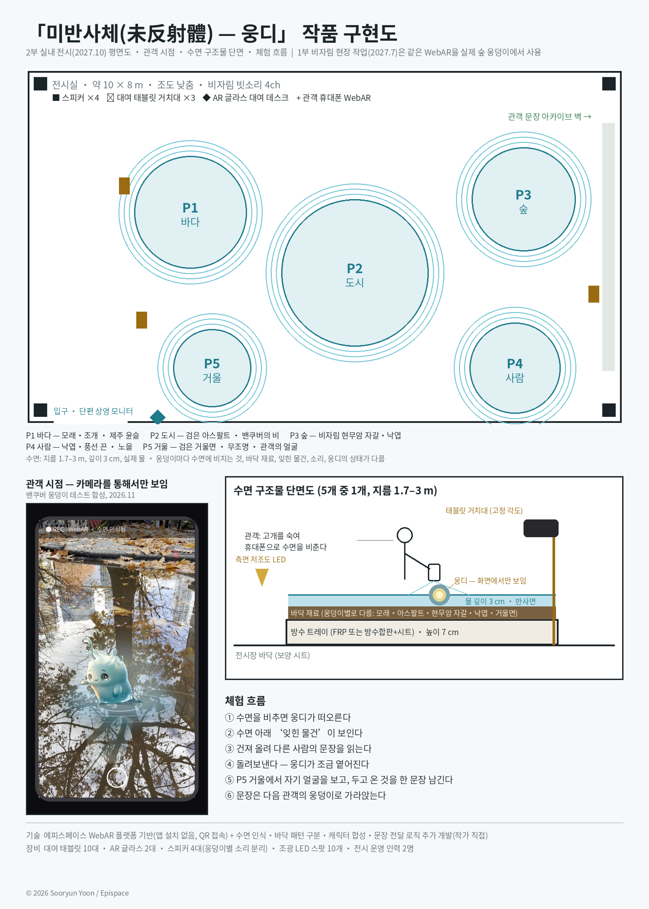
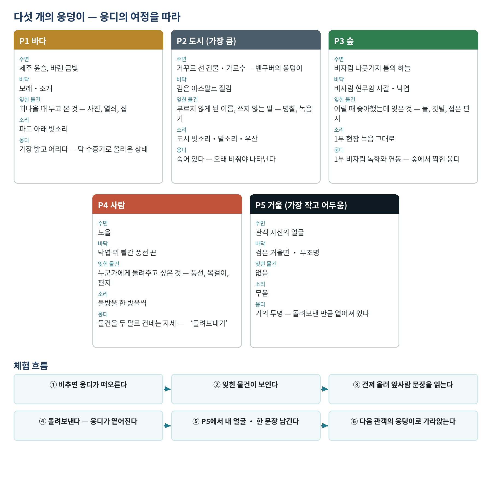
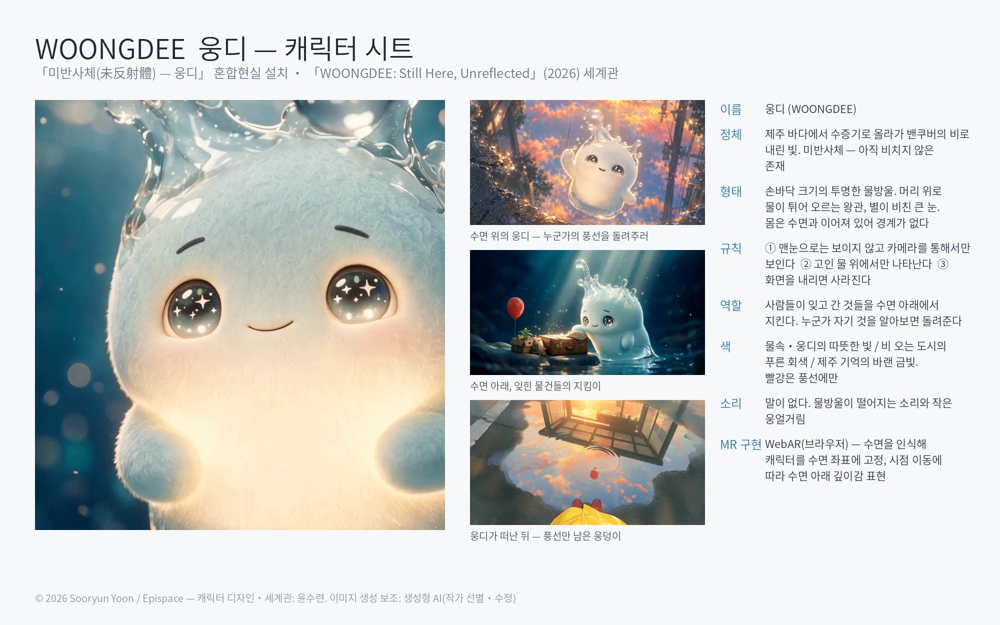

Work in progress · 2027
미반사체(未反射體) — 웅디
The Unreflected
수면 위에서만 만나는 혼합현실 설치 — 1부 비자림 현장 작업(2027.7), 2부 제주 전시(2027.10)
사라진 것이 아니라, 아직 비치지 않은 것이다. 밴쿠버 169.5일의 비와 비자림, 두 수면에서 정체성을 시험한다.
웅덩이는 다섯이다. 바다, 도시, 숲, 사람, 거울. 휴대폰 WebAR로 수면을 비추면 웅디가 보인다. 물건을 건져 앞사람의 문장을 읽고 돌려보낸 뒤, 마지막 거울 웅덩이에서 자기 얼굴을 보고 한 문장을 남긴다.
기술은 도구가 아니라 제약이다. 웅디는 카메라를 통해서만 보이고, 화면을 내리면 사라진다.


